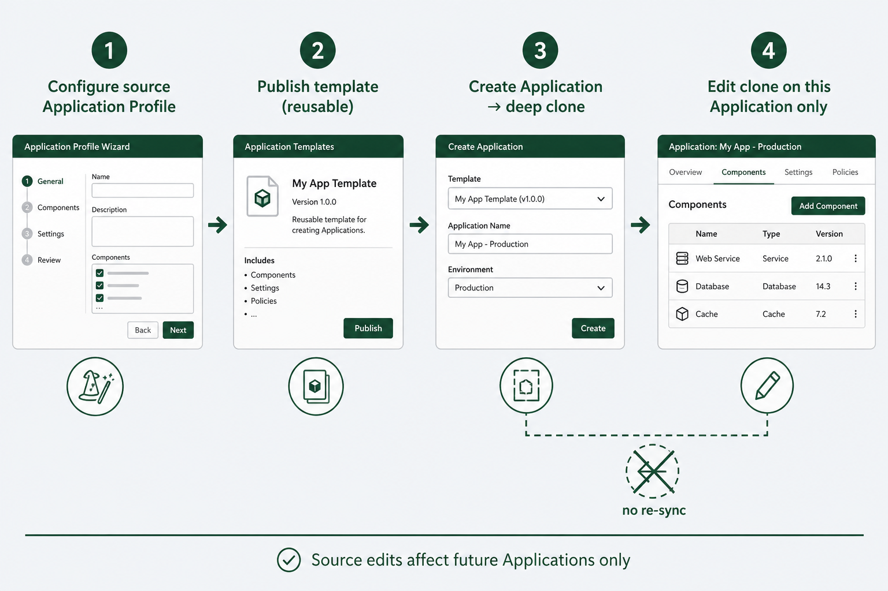
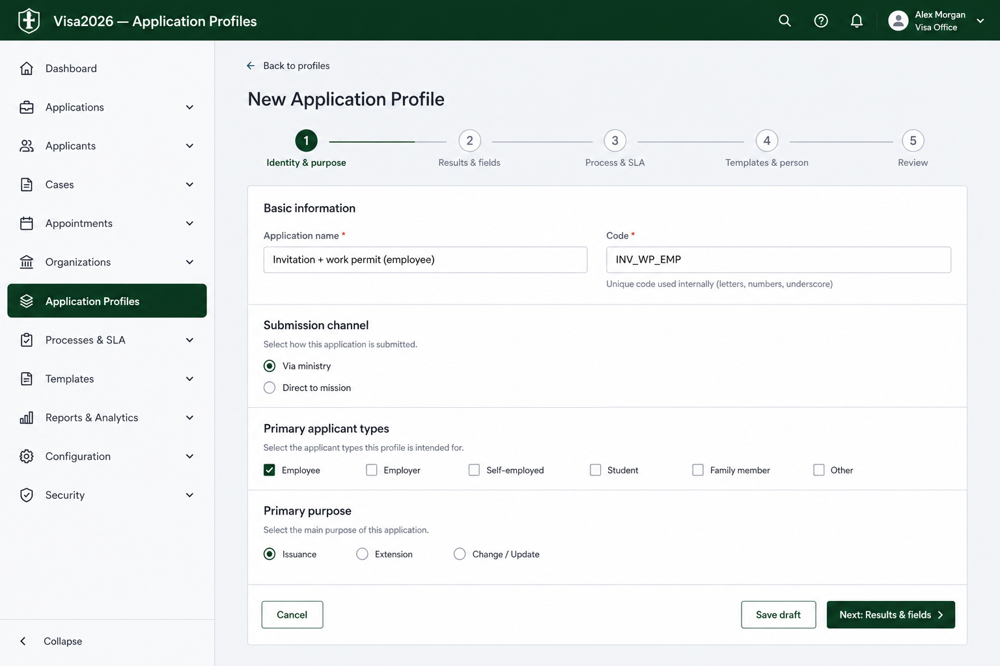
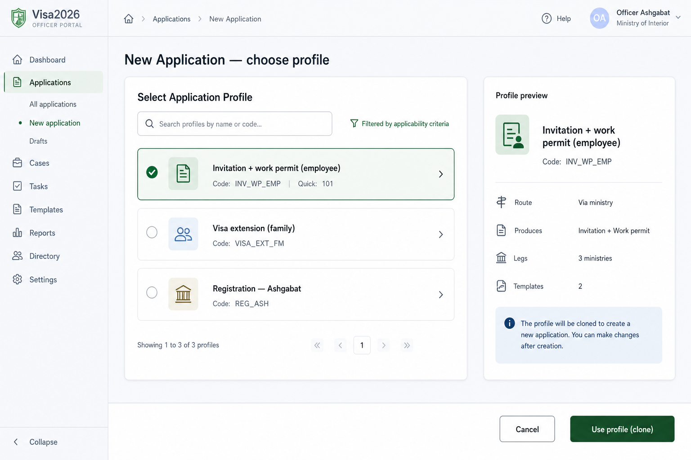
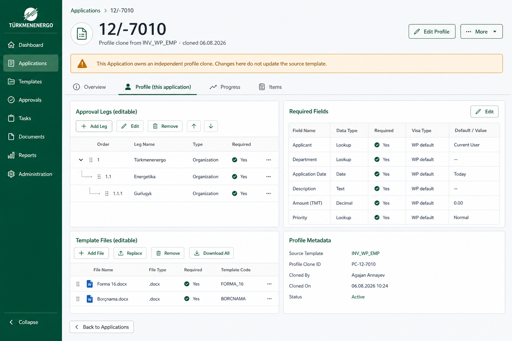

Live configuration via Application → Profile FK, plus per-Application values seeded from defaults. Companion to wizard and plan. No full profile clone.
Applications keep a live link to the profile for configuration; only business values are per-Application.

Wizard sets live configuration and defaults for per-Application fields.

Sets live FK and seeds per-Application defaults once.

Application.ApplicationProfile FK set.Visibility and process rules come live from the profile; officers edit only per-Application values.

From updated Application.xlsx (E–H) and planning chat.